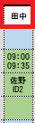
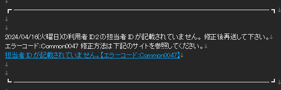

新機能 - 担当者未指定登録(2024/05)
本ドキュメントはスケジュール自動登録サービス(以下、本サービスと記載)に追加された下記の機能のマニュアルとなります。
・ 担当者が未指定の場合、訪問予定のみを作成する。
目次
1.変更点
・旧バージョンでは、必ず担当者を記載しないとエラーになりましたが、新バージョンではエラーにせず、担当者を入れない状態の予定を作成します。
・担当者欄に担当者名があるにも関わらず、IDが記載されていない場合は、IDの記入漏れと判断しエラーとします。
・予定表の担当者欄には「未定」という文字が入ります。二人対応のサブが未指定の場合はメイン担当者の名前のみ入ります。
2.利用方法
・担当未指定にしたい場合は、未指定にしたいルートの担当を空欄とします。
↓登録後
・IDのみが省かれた場合は、ID記入漏れと判断し、旧バージョンと同様のエラーとなります。
↓返送されるエラー
担当者を未指定としたい場合は、必ず担当者を空欄とするようにしてください。
・出力される予定表の担当者欄には「未定」という文字が入ります。
*二人対応のサブが未指定の場合はメイン担当者の名前のみ入ります。